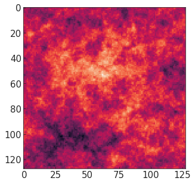
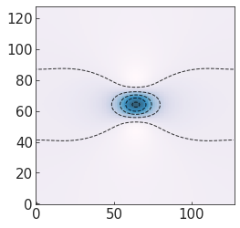
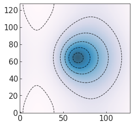

[1]:
%pylab inline
from pmesh.pm import ParticleMesh
from gaussianCR.construct import *
from gaussianCR.cosmo import *
Populating the interactive namespace from numpy and matplotlib
[ ]:
# not necessary
import astropy.cosmology as ac
import nbodykit.cosmology as nbcosmos
[ ]:
choose cosmology¶
Initialize a Cosmos object by :
[2]:
wmap9 = Cosmos(FLRW=True,obj=nbcosmos.WMAP9)
Note that obj is from astropy.cosmology or nbodykit.cosmology, need nbodykit package installed if set FLRW==True. Alternatively, one can also intialize Cosmos obj by setting flag FLRW = Flase, and input cosmological parameters and linear power spectrum at z=0 (note that they should be consistent)
[4]:
data = np.loadtxt('/home/yueying/source/gaussianCR/examples/ps/fdm_m2p5_z0_matterpower.dat')
pk_func = interpolate.interp1d(data[:,0],data[:,1],fill_value='extrapolate')
mycosmos = Cosmos(FLRW=False,H0=69.3,Om0=0.286,Ob0=0.0463,Pk_lin=pk_func)
[ ]:
quick start¶
initialize gsCR with cosmos object, boxsize, Nmesh for the dx_field, RG the kernel smoothing length, xpk the position to impose constraint, CONS to turn on the desired constraints
[ ]:
from pmesh.pm import ParticleMesh
from fastpm.core import leapfrog, Solver, autostages
[52]:
fg = gsCR(wmap9,Lbox=20,Nmesh=128,RG=0.9,xpk=np.array([10,10,10]),CONS=['f0','TG'])
print (fg)
This is a gsCR object:
Lbox = 20.0 Mpc/h
Nmesh = 128
RG = 0.9 Mpc/h
Sigma0_RG = 1.82, Sigma2_RG = 1.78
xpk = [10 10 10]
CONS = ['f0', 'TG']
xij_tensor_inv =
None
[32]:
pm = ParticleMesh(BoxSize=fg.attrs['Lbox'], Nmesh=[128,128,128])
Q = pm.generate_uniform_particle_grid(shift=0)
solver = Solver(pm,nbcosmos.WMAP9, B=1)
[33]:
wn = solver.whitenoise(seed = 181170)
dlin = solver.linear(wn, lambda k: wmap9.Pk_lin(k))
dx_field = dlin.c2r().value # dx_field is the density contrast field centered at 0
[58]:
xpk = fg.find_xpk(dx_field)
print (xpk)
[ 9.6875 7.65625 10.46875]
[60]:
cs,peak_data = fg.read_out_c18(dx_field,rpos=xpk)
[64]:
peak_data['v_peculiar']
[64]:
array([[ 7.69304495, 28.37289775, 46.28549748]])
[65]:
fg.xpk = xpk
[68]:
fg.CONS = ['full']
[70]:
fg.build_Xij_inv_matrix()
[77]:
c_values = fg.set_c_values(nu=5,xd=3.6,a12sq=1.3,a13sq=2.1,a1=0,b1=0,p1=0,
vx=0,vy=0,vz=0,epsilon=58,omega=4.71,a2=np.pi,b2=0.5*np.pi,p2=0.5*np.pi)
Constrain peak parameters:
f0: nu = 5.0 $\sigma_0$
f1: {f1,x = f1,y = f1,z = 0
f2: xd = 3.6 $\sigma_2$, a12sq = 1.3, a13sq = 2.1,a1=0.00, b1=0.00, p1=0.00
vx = 0.0 km/s
vy = 0.0 km/s
vz = 0.0 km/s
TG: epsilon = 58.0 km/s/Mpc, omega = 4.71, a2=3.14, b2=1.57, p2=1.57
[78]:
dx_ensemble = fg.Ensemble_field(c_values)
[79]:
dx_constraint = dx_field + dx_ensemble
[81]:
for dx in [dx_field,dx_ensemble,dx_constraint]:
plt.figure(figsize=(5,5))
den_field = np.transpose(np.sum(dx[:,:,51:83],axis=-1))
plt.imshow(den_field)



[ ]:
[ ]:
[41]:
fg.build_Xij_inv_matrix() # need to call whenever changed CONS
c_values = fg.set_c_values(nu=4,epsilon=60,omega=1.5*np.pi)
dx = fg.Ensemble_field(c_values)
Constrain peak parameters:
f0: nu = 4.0 $\sigma_0$
TG: epsilon = 60.0 km/s/Mpc, omega = 4.71, a2=3.14, b2=0.00, p2=1.57
[12]:
den_field = np.transpose(np.sum(dx,axis=-1))
plt.imshow(den_field,cmap="PuBu",origin='lower',alpha=0.8)
plt.contour(den_field,colors='black',alpha=0.8,linewidths=1,linestyles='dashed',levels=5)
[12]:
<matplotlib.contour.QuadContourSet at 0x7f997c06a390>

[ ]:
[13]:
fg.CONS = ['f0','f2']
fg.build_Xij_inv_matrix()
c_values = fg.set_c_values(nu=4,xd=3,a12sq=2)
dx = fg.Ensemble_field(c_values)
[14]:
den_field = np.transpose(np.sum(dx,axis=-1))
plt.imshow(den_field,cmap="PuBu",origin='lower',alpha=0.8)
plt.contour(den_field,colors='black',alpha=0.8,linewidths=1,linestyles='dashed',levels=5)
[14]:
<matplotlib.contour.QuadContourSet at 0x7f99643da110>

[ ]:
[21]:
fg.xpk=np.array([3,7,10])
dx = fg.Ensemble_field(c_values)
den_field = np.transpose(np.sum(dx,axis=-1))
plt.imshow(den_field,cmap="PuBu",origin='lower',alpha=0.8)
plt.contour(den_field,colors='black',alpha=0.8,linewidths=1,linestyles='dashed',levels=5)
[21]:
<matplotlib.contour.QuadContourSet at 0x7f7b140c4890>

[ ]:
[24]:
fg.CONS = ['f2']
fg.xpk=np.array([10,10,10])
fg.build_Xij_inv_matrix()
c_values = fg.set_c_values(xd=3,a12sq=2)
dx = fg.Ensemble_field(c_values)
[25]:
den_field = np.transpose(np.sum(dx,axis=-1))
plt.imshow(den_field,cmap="PuBu",origin='lower',alpha=0.8)
plt.contour(den_field,colors='black',alpha=0.8,linewidths=1,linestyles='dashed',levels=5)
[25]:
<matplotlib.contour.QuadContourSet at 0x7f7b14135f90>

[ ]:
[26]:
fg.CONS = ['TG']
fg.xpk=np.array([10,10,10])
fg.build_Xij_inv_matrix()
c_values = fg.set_c_values(epsilon=30,omega=1.5*np.pi)
dx = fg.Ensemble_field(c_values)
den_field = np.transpose(np.sum(dx,axis=-1))
plt.imshow(den_field,cmap="PuBu",origin='lower',alpha=0.8)
plt.contour(den_field,colors='black',alpha=0.8,linewidths=1,linestyles='dashed',levels=5)
[26]:
<matplotlib.contour.QuadContourSet at 0x7f7b043145d0>

[ ]:
[27]:
fg.CONS = ['f0','vx']
fg.xpk=np.array([10,10,10])
fg.build_Xij_inv_matrix()
c_values = fg.set_c_values(nu=3,vx=60)
dx = fg.Ensemble_field(c_values)
den_field = np.transpose(np.sum(dx,axis=-1))
plt.imshow(den_field,cmap="PuBu",origin='lower',alpha=0.8)
plt.contour(den_field,colors='black',alpha=0.8,linewidths=1,linestyles='dashed',levels=5)
[27]:
<matplotlib.contour.QuadContourSet at 0x7f7b04288e90>

[ ]:
[ ]:
[ ]: